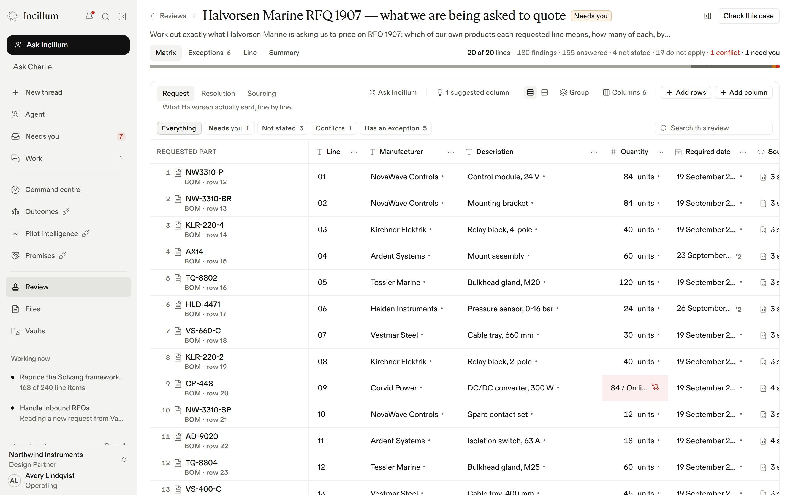
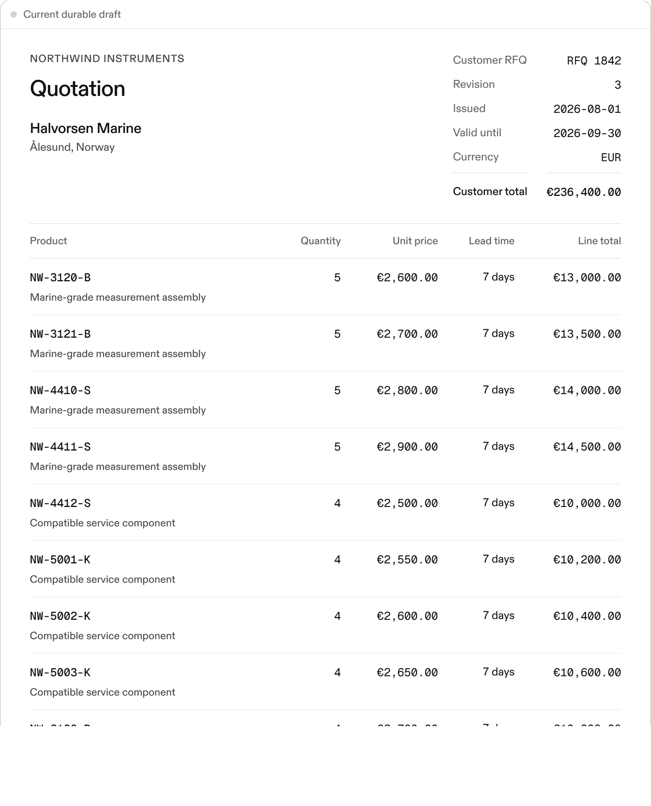

Incillum
Pernille Halvorsen
Just now
Picked up by Charlie
RFQ 1907 — twenty items for Ålesund
Please quote for the twenty items on the attached bill of materials. We require your response by 16:00 on Monday.
RFQ_1907.pdf6 pages
Halvorsen_RFQ_1907.xlsxSheet BOM
Framework_terms.docx12 pages
Ålesund_fit-out.pptx18 slides




NORTHWIND INSTRUMENTS
Halvorsen Marine AS
Ålesund, Norway
Ålesund, Norway
Our proposal
Reply to Pernille Halvorsenthree attachmentsSend
Incillum
Intelligence for commercial work.
incillum.com